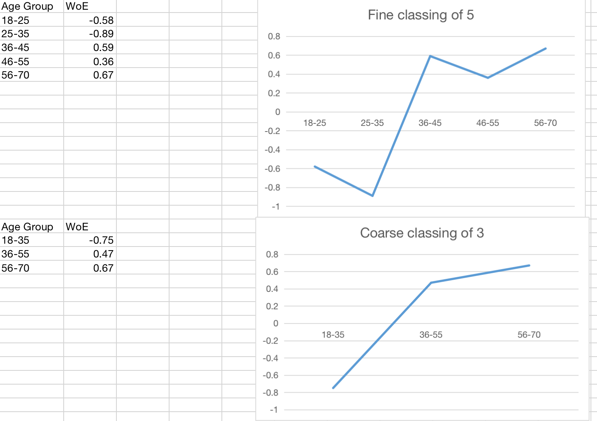

WOE and IV
In this section, we will talk about WoE (weight of evidence) and IV(information value) in the context of logistic regression for risk modeling.
Introduction
WoE, in the context of risk modelling does three things,
binning of featuresuch that it's monotonic to reduce statistical noise by removing non-linearity. And feature's interoperability (at the cost of losing prediction power)Substitute Continuous Variable: Use age for example, convert age --> age group and then calculate their respective \(WoE_i\) for each age group. Use \(WoE_i\) instead of age-group in the logistic model, labelled as age.Substitute Categorical:
Tip
WoE and IV is useful for feature binning but limited only in binary classification, usually logistic regression. If modeller wish to try out different model like SVM, you have to use other binning strategy. It is due to SVM can capture non-linear relationship between predictor and target value. If you only use WoE, which require monotonicity, you will end up losing the non-linearity feature which serves no good for non-linear model like SVM.
WOE and IV Math Formulation
Let's assume our target value of 1 as good and 0 as bad,
\(WoE_i\) (weight of evidence) is defined as
where \(WoE_i\) is the weight of evidence for \(i\) th bin, % of good in class is also called distribution of good in some texts.
As for \(IV_i\), it's dependent on
$$ \begin{align} IV_i &= WoE_i \times \left(\textbf{\% of good in class i} - \textbf{\% of bad in class i}\right)\ \text{IV} &= \sum_{i=1}^{n} IV_i \end{align} $$ We typically talk about information value as \(\sum_{i=1}^{n} IV_i\)
WoE Intuition
WoE is useful for binning, let's say continuous variable like age. Binning or bucketing is often used to convert
For example,
| Age Group | Good | Bad | WoE | IV |
|---|---|---|---|---|
| 18-35 | 2000 | 400 | -0.75 | 0.23 |
| 36-55 | 3402 | 201 | 0.47 | 0.08 |
| 56-70 | 1900 | 92 | 0.67 | 0.09 |
| Total | 7302 | 693 | - | 0.4 |
If we draw out diagram, due to it's logarithmic nature

In feature engineering, some questions naturally arises, such as
- weight of evidence (WOE) values maintain a monotonic relationship with the 1/0 variable (loan default or not default for example.)
- each bin is reasonably sized and large enough to be representative of population segments,
- Optimize IV value in the process of binning (iterative process)
WoE Derivation
It's bugging me where the jargon \(WoE\) is from. It turns out nothing but a ratio that obtainable by substituting linear model to sigmoid function will yield WoE, (add equations here)
Recall sigmoid and its derivative
For sigmoid we can have,
Then we write the linear regression in matrix form
We substitute the linear regression to \(\frac{1}{1-y} = e^{z}\) and take log on both sides
where \(y\) being good, \(1-y\) being bad, \(\omega\) and \(b\) are the parameters we need to optimize for our objective function.
We can then write the above formation in another form
Does it look familiar? the \(\ln \frac{P\left(y=1 \mid x \right)}{P\left(y=0 \mid x \right)}\) is a ratio of percentage of good over percentage of bad, which is equal to \(WoE_i\). Weight of evidence is just a made-up name that shows this relationship. Then the next of the logistic regression is to determine \(\omega\) and \(b\), which can be solved by
- cross entropy as loss function and gradient descent
- maximum likelihood method
Discussion on monotonicity
An example of coarse binning and find binning is shown here,

WoE and sigmoid
Recall sigmoid is smooth, monotonic, and differentiable
smoothanddifferentiability: ensure optimization technique like gradient descent or Adam optimization to workmonotonicity: WoE, like sigmoid, also needs to be monotonic. That's the core of linear model.
IV Intuition
\(\sum IV_i\) has been used to measure the predicting power of predictor, generally under the guideline of following
| Information Value | Predictive Power |
|---|---|
| <0.02 | useless for prediction |
| 0.02 to 0.1 | weak predictor |
| 0.1 to 0.3 | medium predictor |
| 0.3 to 0.5 | strong predictor |
| > 0.5 | suspicious or too good to be true |
It's generally good to have medium and strong predictor.
Your woe-binning algorithm typically will target to iteratively choose bin size to get \(\sum IV_i\) to some where between 0.3 - 0.5.
Reference
Some basics
Implementation of the Monotone optimal binning algorithm for credit risk modeling (2017)